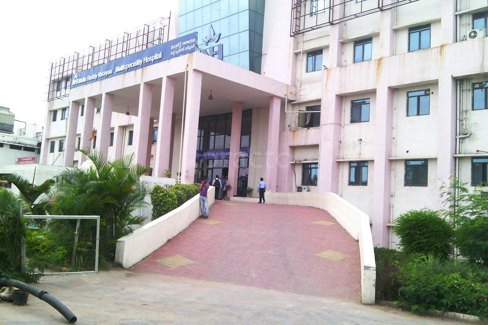

Narayana Health (formerly known as Narayana Hrudyalaya) is a chain of multi-specialty hospitals in India,with its headquarteres in Bengaluru. The hospital chain operates one of the largest telemedicine networks in the world. Narayana Health operates a chain of hospitals, heart centres, and primary care facilities across India. Narayana Health (Narayana Hrudayalaya Ltd.) was founded by Dr. Devi Shetty and has its flagship hospital in Bangalore at NH Health City. Apart from Bangalore, the group has its presence in Delhi, Kolkata, Ahmedabad, Jaipur, Raipur, Jamshedpur, Guwahati, Mumbai, Mysore, Dharwad, Kolar, Shimoga and Davangere in addition to an international subsidiary in the Cayman Islands,[3] Three of its hospitals, Narayana Institute of Cardiac Sciences, Bangalore, Narayana Multispeciality Hospital, Jaipur and Health City Cayman Islands.
Dr. Devi Shetty founded the Company in the year 2000 (19 July 2000) with a hospital in Bangalore.He later initiated the concept of micro health insurance scheme along with the Karnataka government. Over the same period NH established its second hospital in Kolkata. From 2009-2012 Narayana Health established hospitals in Jamshedpur, Jaipur, Dhawad, Raipur, Ahmedabad, Mysore, and Davangere. In 2013, Narayana Hrudyalaya Pvt. Ltd. officially changed its identity to Narayana Health.[12][13] It now operates several hospitals and heart centres across India. Since 2014, the group operates Health City Cayman Islands in the Cayman Islands in partnership with Ascension Health.
Dr.Devi Shetty,Chairman and Founder,Narayana Health city